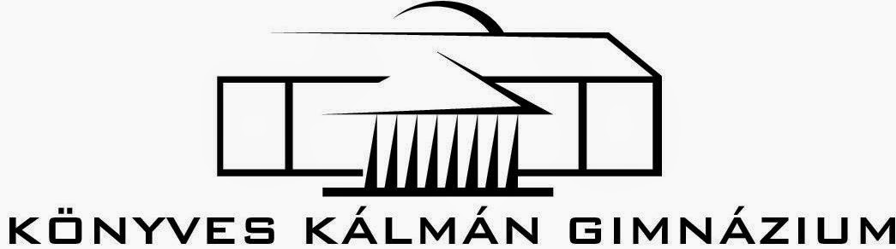
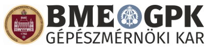
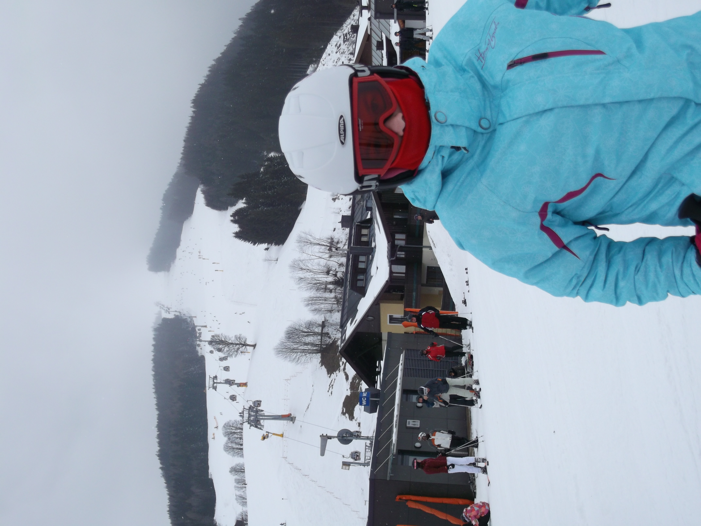
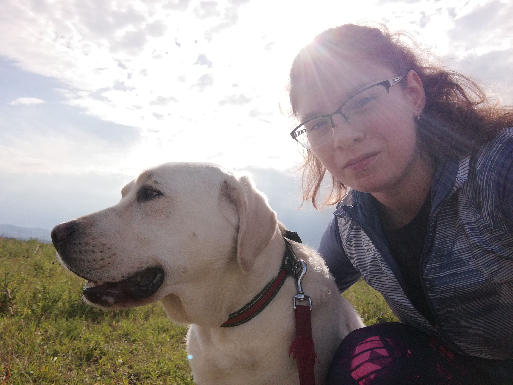
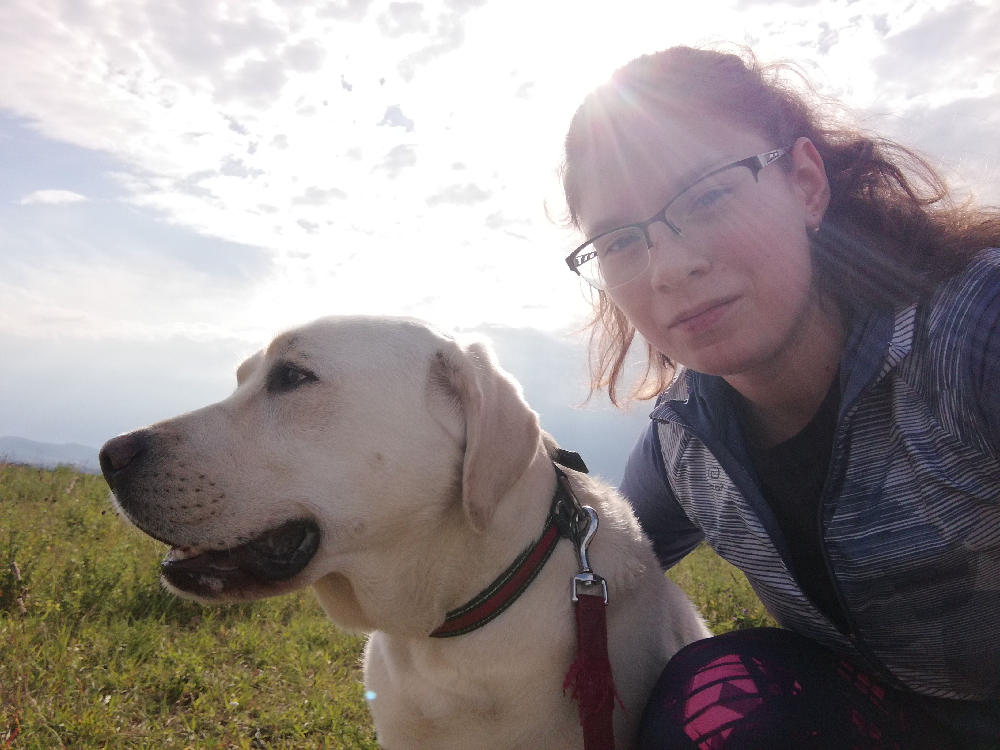

Tanulmányaim
 
Iskolai tanulmányaimat az Újpesti Csokonai Vitéz Mihály Általános Iskola és Gimnáziumban kezdtem meg, ahol 8 évet tanultam. Osztálytársaimmal sok matematika versenyen vettünk részt, többször szép helyezeséket értünk el. Az évek folyamán végig kitűnő jegyeim voltak, amiért keményen megdolgoztam és ezért két társammal együtt a nyolc éves kiváló teljesítményünkért dicséretben részesültünk.
A középiskolai tanulmányaimat az Újpesti Könyves Kálmán Gimnáziumban kezdtem meg, itt is szépen teljesítettem. A tanulásba vetett sok munka a kitűnő és jó jegyek tükrében mutatkozott meg. 2020-ban kitűnő eredménnyel tettem le az érettségit, mind az öt tantárgyból jeles értékelést kaptam. Matematikából (emelt szinten) és fizikából (közép szinten) felvételiztem.
Ezután felvételt nyertem az első helyen megjelölt Budapesti Műszaki és Gazdaságtudományi Egyetem Gépészkarának energetikai mérnöki alapszakára. Jelenleg itt folytatom tanulmányaimat.
Kompetenciáim
Nyelvismeret
- B2 komplex általános nyelvvizsga német nyelvből (2019)
- C1 komplex általános nyelvvizsga német nyelvből (2020)
- angol nyelvből alapszintű nyelvtudás
Számítógépes ismeretek
- Microsoft Office Word, -Excel, -PowerPoint középszintű ismerete
- C# programozási nyelv alapszintű ismerete
Szociális és szakmai készségek
Pontos és precíz vagyok a munkám elvégzése során, ezt tanáraim többször kihangsúlyozták. Csapatban is jól tudok együttműködni, meg tudom értetni magam a többiekkel és én is elfogadom mások véleményét, kritikáját. A rám bízott feladatokat mindig időre és lelkiismeretesen hajtom végre és próbálok a tökéletesre törekedni.
Egyéb
Szabadidőmben szeretek kirándulni és a természetet felfedezni. Hobijaim közé tartozik továbbá az olvasás, a fotózás és a sportolás, mint például a teniszezés, a síelés és a futás. Ezenkívül nagyon szeretek társasjátékozni is a családommal, barátaimmal.
 
